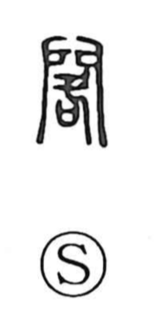

閣

Uncategorized
Kun: | On: kaku
pavilion ・ tower ・ cabinet ・ palace ・ shelf ・ rack
Explanation
閣 is a phono-semantic compound: the gate frame (門) encloses 各, which supplies the on reading kaku and also carries the sense of winding around, obstructing, and stopping. The character originally evoked a gate with posts set on both sides and a horizontal bar laid across to block passage. From this concrete image of barring a gateway, the meaning broadened to grand architectural structures associated with gates and frontage—stately pavilions and mansions (as in 楼閣)—and, by extension, to a cabinet, as well as to items like a shelf or rack.